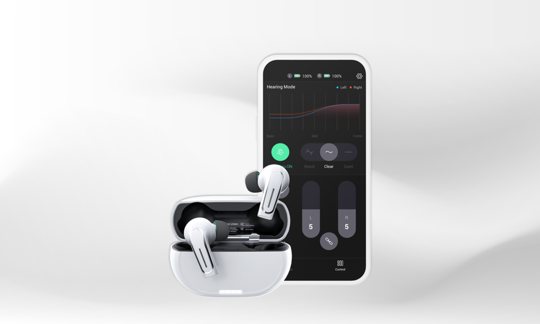
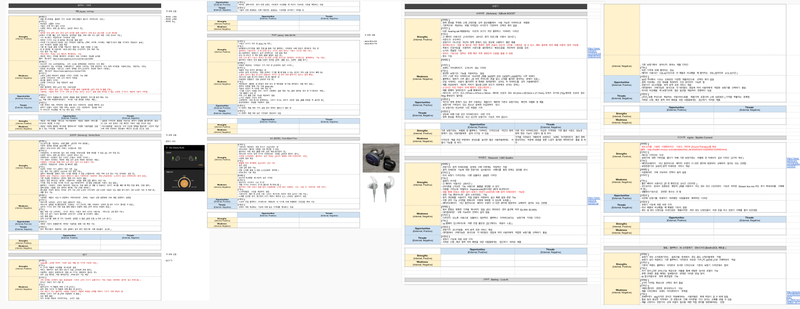
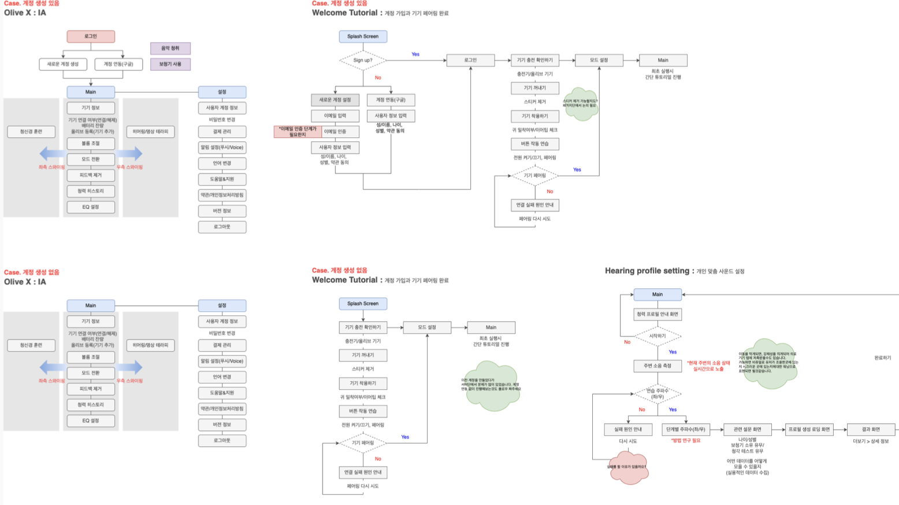
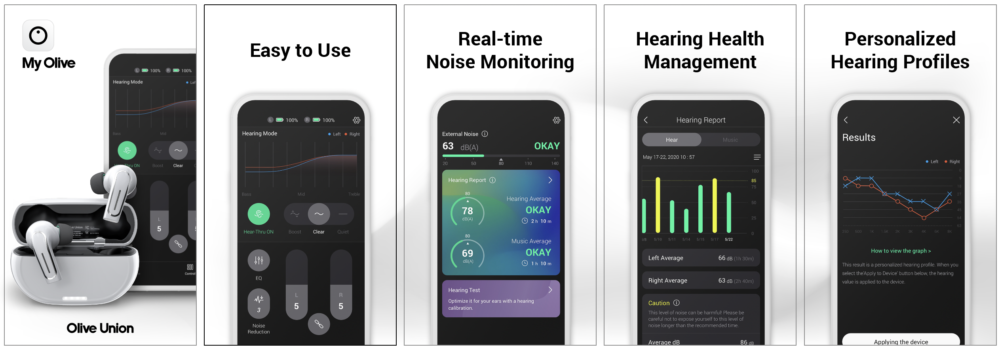
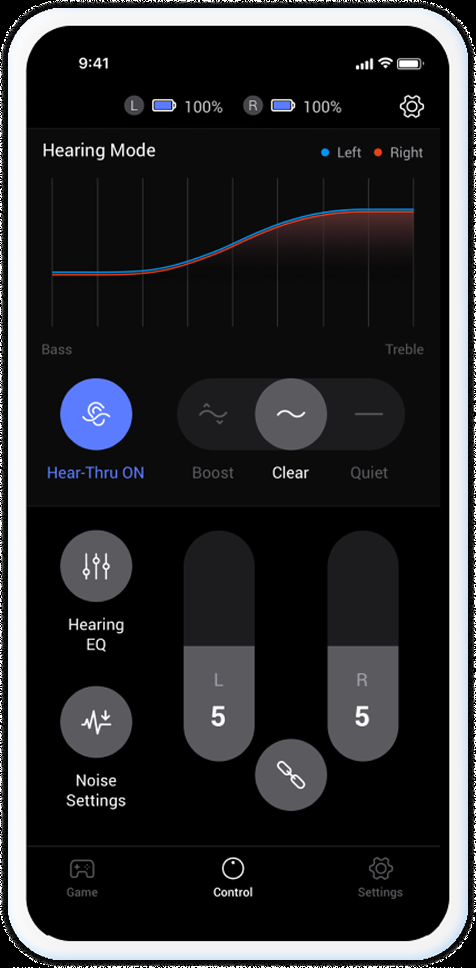
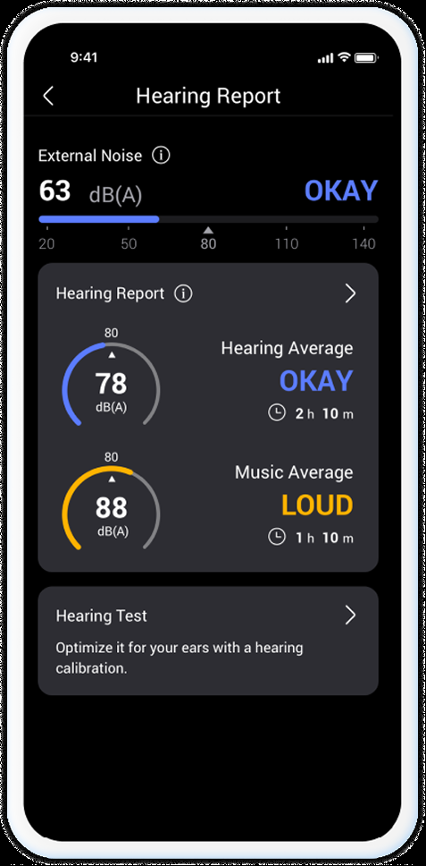
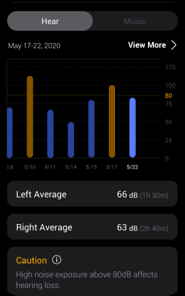
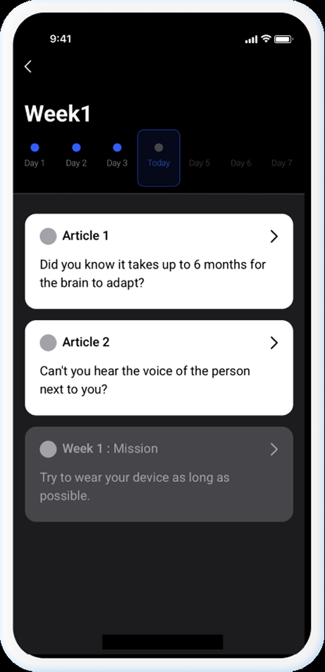
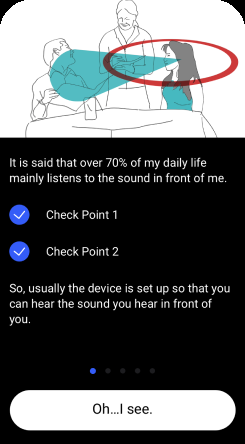
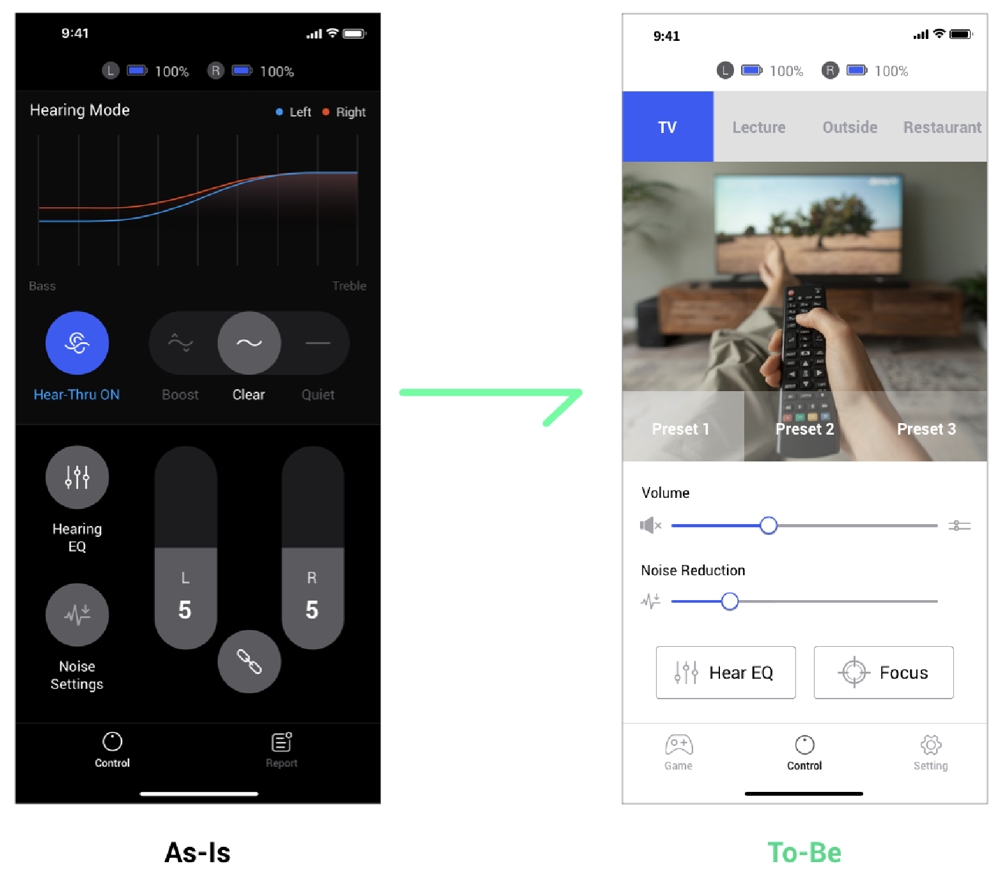

"노년층이 귀가 안 좋을 때 쓰는 특정 제품"이라는 인식을, "눈이 안 좋으면 안경을 쓰듯 귀가 안 좋으면 누구나 쓰는 제품"으로 바꾸는 걸 목표로 스마트 보청기 연동 앱 'My Olive'를 기획부터 출시까지 리드했습니다.

국내외 스마트 보청기 시장 확대 · 데이터 활용 사업을 위한 활성 사용자 증대 · 청력 손실 예방 경각심 개선
중증도 난청까지 커버하는 음성 증폭 기능 내장, 주변 소음 수집을 통한 데이터 축적
5분 청력 검사 결과에 맞춘 최적화, 청력 예방 리포트, 상황별 모드·세부 설정, 검사 결과별 맞춤 정보 제공
만약:
그러면:
진입 장벽이 낮아져 더 많은 사용자가 편하게 구매·사용할 것이다
문제: 주변 소음에 과도한 노출
난청 유형·정도별 맞춤 적응 프로그램 추천, 실시간 소음 측정 리포트와 소음 알림 제공
문제: 전문기관 방문을 통해서만 검사·설정 가능
모드·볼륨·세부 설정 UI 제공, 기기 연결·세척 메뉴얼 영상 제공
문제: 방문을 통해서만 상태 진단 가능
친근한 어조의 예방 알림, 과도한 소음·기기 문제 발생 시 즉각 알림
| 단계 | 내용 |
|---|---|
| Research | SWOT 분석, 시장조사, 15~20여개 이어버드 앱 직접 사용 후 Task flow 기획 |
| Define | 서비스 목표 설정, 제품·서비스 기능 확정, 브랜딩 기획 참여 |
| Plan | 화면 설계(Flow, 정책서), 알고리즘 기획 참여 |
| Design | Prototyping, CBT(내부테스트 병행) |
| OBT(UT), QA | TC 작성(앱 한정), Issue Check 및 QA 요청서 작성 |
| Guide | 제품 메뉴얼 제작 참여, 박스 패키지 디자인 참여 |
| Release | 긴급 이슈 대응 |
국가별 서비스 최적화를 위해 iOS/Android 언어별로 작업했고, MVP 설정 후 팀별 최소 작업 단위로 진행. 빠른 개발을 위해 기능 단위로 내부 직원·타겟층 테스트를 거치고, 출시 전 외부 테스터를 모집해 이슈에 대응했습니다.


Easy to Use·실시간 소음 모니터링·청력 건강 관리·개인 맞춤 청력 프로필까지, My Olive가 제공하는 핵심 기능을 화면 단위로 정리했습니다.

초기 앱에서는 청력 리포트를 홈 화면에 배치했지만, 실제 사용자의 주 목적인 컨트롤 조작에 맞춰 홈을 컨트롤 화면으로 변경했습니다.
상단 영역은 청력 검사를 기반으로 현재 모드 값을 그래프 형태로 보여주고, 하단에서 모드·볼륨·세부 EQ를 조작할 수 있습니다.

음성을 최대로 증폭한 모드. 사람들 간 대화, 업무 회의, TV 소리 등을 볼 때 사용합니다.
가장 자연에 가까운 모드. 특별한 상황이 아닌 일반 환경에서 사용합니다.
주변 방해 소음을 차단하는 모드. 소음을 차단하고 안정감을 취하고 싶을 때 사용합니다.

Hearing Report주변 소음 정도를 실시간으로 측정한 청력 예방 리포트. 기기와 스마트폰 스피커를 통해 수집·재생된 소음을 모두 측정해 리포트 형태로 누적하고, 손실을 유발할 수 있는 수준이 되면 경고 알림으로 사용자에게 알립니다.


Training기기 적응을 위한 맞춤형 적응 프로그램. 증폭된 음성에 쉽게 적응하지 못하는 사용자를 위해 개인별 9개월 프로그램을 제공하며, 청력 관련 아티클과 간단한 퀴즈로 최대한 재미있게 접근할 수 있도록 했습니다.

GA 데이터·CS 문의·국가별 서베이 내용을 종합해 사용자 테스트를 기획했습니다. 50~70대, 자사·타사 리모컨/앱 사용 경험 유형(A-1·A-2·B·C)별로 총 7명(남성)을 모집해 인터뷰를 진행했습니다.
청력 예방 리포트를 제공하면 사용자들이 청력 손실에 대한 경각심을 느끼고, 제품을 필요로 할 것이다.
사용자들은 의외로 청력 예방에 경각심을 느끼지 못했고, 리포트 제공은 제품 구매에 중요한 요소가 아니었습니다.
모든 화면과 기능을 상세하게 풀어놓으면, 연령층이 높은 사용자도 서비스 기능을 이해하기 쉬울 것이다.
상세하게 내용을 풀어 튜토리얼을 제공했지만, 제품에 대한 설명이 부족하다는 의견이 전체의 80% 이상을 차지했습니다.
컨트롤 화면을 대시보드 형태로 제공하고 세부 설정 옵션을 많이 제공하면, 전문적으로 느껴 신뢰를 갖고 편하게 커스터마이징할 것이다.
대시보드 등 비주얼적인 면보다 기능 중심으로 간단하게 조작하길 원하는 사용자가 90% 이상이었고, 세부 옵션은 초기 세팅 단계에서만 쓰고 이후엔 프리셋 버튼만 사용하는 경우가 대부분이었습니다.
초기 앱은 청력 리포트를 홈 화면에 배치했지만, GA 데이터로 사용자들이 실제로 가장 많이 쓰는 화면이 "컨트롤"이라는 걸 확인하고 메인 화면을 컨트롤 중심으로 재배치했습니다.
상단엔 청력 검사 기반 현재 모드가 그래프로, 하단엔 모드·볼륨·세부 EQ 조작. Boost(최대 증폭)·Clear(자연에 가까운 기본값)·Quiet(소음 차단) 3모드 + Noise Reduction 슬라이더 제공.
기기로 수집한 주변 소음과 스마트폰 스피커 재생 소음을 모두 측정해 리포트로 누적. 손실 유발 가능한 소음 수준에 도달하면 경고 알림 발송.
증폭된 음성에 적응하지 못하는 사용자를 위한 9개월짜리 맞춤 적응 프로그램. 청력 관련 기사·퀴즈로 낯선 정보에 쉽게 접근하도록 구성.

그래프 중심의 대시보드 화면을 TV·Lecture·Outside·Restaurant 등 상황별 프리셋 중심 화면으로 재설계해, 세부 설정 대신 상황에 맞는 프리셋 선택만으로 조작이 끝나도록 단순화했습니다.